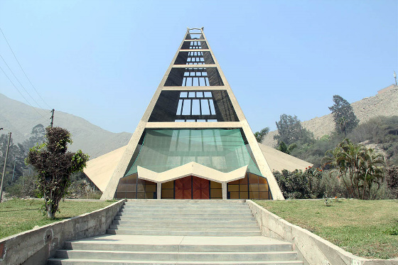
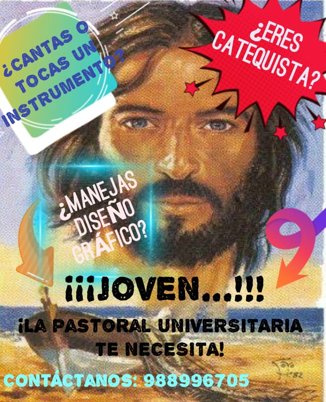
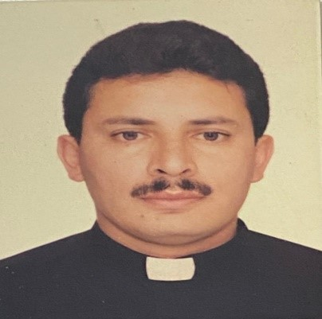

Actividades
ALIMENTAR LA ESPIRITUALIDAD CRISTIANA
Ofreciendo Mpreparación para los sacramentos de Bautismo, Primera Comunión, Confirmación y Matrimonio.
Favoreciendo momentos de oración, adoración, jornadas y retiros espirituales.
Ofreciendo la recepción de los sacramentos de la Confesión y Comunión.
PROMOVER Y FORTALECER NUESTRA IDENTIDAD Y COMPROMISO EN LA IGLESIA
Cuidar nuestro testimonio coherente de vida cristiana.
Brindando cursos de formación cristiana.
Favoreciendo respuestas solidarias a las necesidades de la sociedad.
BRINDAR LA COMPAÑÍA DE AMIGOS, CATEQUISTAS Y CONSEJEROS
Ofreciendo acompañamiento psico-emocional.
Alentando el acompañamiento espiritual.
Estimulando la vida deportiva y fraterna.
Escuchando, animando y alentando los proyectos de cada uno.
Historia
 Perfil del Capellán
P. Ronny Ayala Rojas, sacerdote salesiano, es el Capellán de la Universidad Nacional de Educación Enrique Guzmán y Valle, cuenta con un equipo educativo-pastoral para desarrollar las propuestas formativas, espirituales, de integración y compromiso con la sociedad.
Entre otras tareas llevaremos adelante un Proyecto de Acompañamiento Pastoral de la Universidad, anhelando contar con la mayor participación de los integrantes de la comunidad universitaria con la finalidad de llegar a todos.